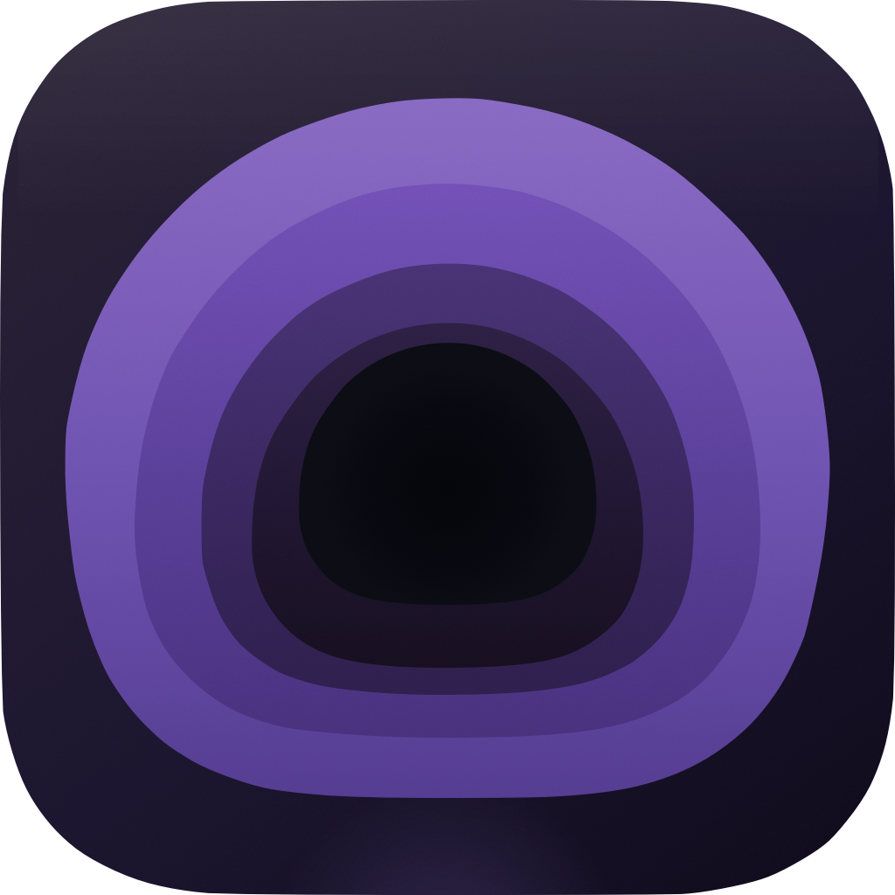
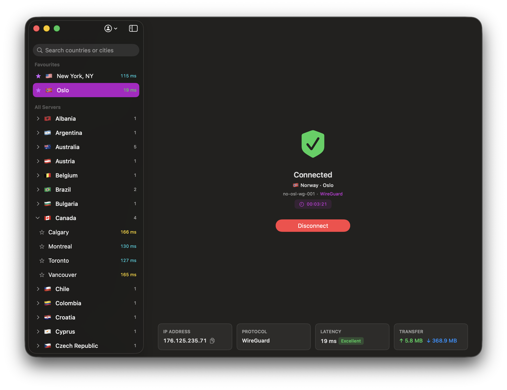

Burrow
A lightweight, native macOS WireGuard VPN client
for Mullvad VPN
Requires macOS 26.4 or later (Apple Silicon)


A lightweight, native macOS WireGuard VPN client
for Mullvad VPN
Requires macOS 26.4 or later (Apple Silicon)
